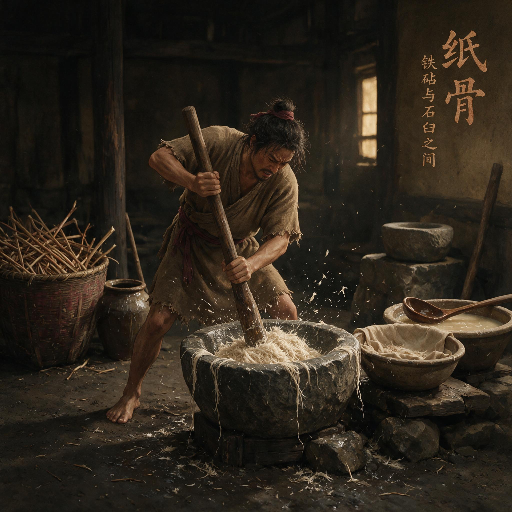

第 8 章
铁砧与石臼之间
尚方工坊西角的石臼房没有窗。光从门洞斜着切进来，在夯土地面上划出一条白亮的界。界这边是蔡伦的袍摆和一只靴尖，界那边是三个石臼，两口木桶，和一地湿漉漉的麻皮碎料。臼房里弥漫着浸泡过夜的麻纤维气味——不是霉，是那种植物茎皮被水逼出胶质之后才有的生涩腥甜，混着石底渗上来的冷意，贴在脸上像一层薄浆。
蔡伦站在靠门那只石臼旁边，已经站了将近半个时辰。他没有说话。工匠们便也不停。木槌落在石臼里的声音是有规律的：三下重，一下轻，再翻动臼内堆料，再三下重。这是尚方工坊做麻料衬底的旧法，用来捶打函套内衬的粗麻絮，力道和次数都是老师傅传下来的定规。没人改过，也没人想过要改。
蔡伦弯下腰，伸手从臼沿上捏起一小团还没舂透的纤维。那团麻皮在指尖散开的感觉，让他停住了。不是散。是撕。纤维之间还连着，扯不断，却也不成片。浸过一夜的麻皮外层已经泡软了，指腹一搓就能褪下黏滑的胶质，但内层的筋丝仍然硬韧，像是某种不肯松手的记忆。他想起库房老僮那句问话——先看哪一厢？他当时答的是都看，从麻头看起。此刻他站在这石臼房里，手里这团撕扯不开的纤维，便是那堆麻头里最顽固的一类。
他把那团纤维举到光里看——短纤维横七竖八地缠在一起，中间裹着几根没打散的长丝，长丝末端还连着豆大的一点麻皮硬壳。没有舂透。他攥紧那团纤维，指节发力，再松开。纤维在掌心里团成一个不均匀的绒球，有的地方薄得透光，有的地方鼓出一个硬疙瘩。这不是他要的东西。
他要的东西应该像——他脑子里忽然浮出一个画面，清晰得像昨天才见过：铁坯从炉中钳出，搁在铁砧上，第一锤落下去，铁坯表面那层氧化皮应声碎裂，露出底下暗红的热铁。再一锤，铁坯扁下去一分。翻过来，再一锤。反复捶打，反复折叠，直到铁料里的杂质被一层一层挤出来，直到铁质均匀得可以淬火。那是他父亲教他的第一件事。
不是用嘴教的。耒阳铁官作坊里，他站在铁砧旁边，个子还没有砧面高。他父亲从背后握住他的手腕，把他的手指按在刚捶打过一轮的铁坯上，说：你摸。他摸到了。铁坯表面粗粝扎手，但热度从指尖一路烫到手腕。他父亲又说：你摸这里。他的手指被引到另一块已经折叠捶打过七次的铁坯上。不一样。
那块铁坯表面平滑得多，热度也更均匀，像是整块铁都在呼吸同一个温度。他那时候还不懂什么叫“组织均匀”，但他记住了那个手感——从粗粝到平滑，从扎手到温润，中间隔着的不是别的，是反复捶打

汉代石臼舂捣麻料场景
AI 生成插图，非史实影像。
。反复。蔡伦把那团麻纤维搁回臼沿上，直起身。“换料。”他说。臼边工匠停下木槌，抬头看他。蔡伦指了指墙角那堆已经浸泡过的旧布碎料，说：“把臼里的麻皮清出来，先舂旧布。”
工匠愣了一下。按尚方工坊的旧例，旧布比麻皮更难舂——麻皮至少还有纹理可循，旧布的经纬线一旦泡烂，舂起来就是一锅糊涂，不是结成硬块就是碎成烂泥，从来没人拿它当正经料用。但尚方令开了口，工匠便不再犹豫。
他把臼里的麻皮捞出来，甩进旁边的废料筐，又从墙角捧了两捧湿漉漉的旧布碎料，铺进石臼。木槌重新落下。声音变了。麻皮是韧的，槌落下去会弹回来一分，声音闷中带韧；旧布是烂的，槌落下去就陷进去，声音发钝，像把拳头打进湿土里。
蔡伦听着这个声音，眉头微微皱起来。太软了。旧布的纤维已经被织造和穿着耗过一轮，不如麻皮筋道，一槌下去就塌成饼，翻都翻不动。
“加水。”他说。工匠提起木桶，往臼里添了半瓢水。槌再落下去，声音又变了——这一次是稀的，水太多了，纤维在水里漂着，槌头打不到实处，只溅起一片水花。“少了。再加。”
又半瓢。再试。还是稀。“把水倒掉一半。”
工匠照做。倒掉水，再舂。这一次木槌落下去的声音终于对了——不闷不稀，有一种沉实的咬合感，像是槌头和纤维之间达成了某种默契。
蔡伦走过去，弯腰从臼里捏起一团旧布浆。指尖碾开。这一次纤维散得比麻皮好，旧布的经纬线已经被水浸透了，槌打之下很容易离解成单根纤维，但他也看到了问题——断的太多。旧布纤维本来就短，几轮槌打下来，断成了更短的碎絮，捏在手里没有筋骨，像一把湿灰。太脆了。这样的浆料抄不成纸，抄出来也是一张一碰就破的死皮。
他放下那团碎絮，走到第二只石臼前。这只臼里舂的是麻皮。他刚才让工匠把麻皮清出来，但清出来的只是臼里的料，墙角还堆着更多浸泡过的麻皮。他蹲下去，从湿漉漉的麻皮堆里抽出一根，对着光看。麻皮的纤维比旧布长得多，也韧得多。问题是太韧了。刚才那团没舂透的纤维团已经告诉了他：按旧法舂三下翻一下，麻皮外层泡软了，内层筋丝还没断，舂出来的料里裹着硬疙瘩，这样的浆料抄出来也是一张疙疙瘩瘩的糙皮，墨落上去会洇成一片。两难。
旧布易散却易断。麻皮筋长却难舂。他要的是一种介于两者之间的东西——纤维足够长，不至于一碰就碎；又足够分散，不至于纠结成团。
他见过这种东西。不是在尚方工坊里。是在耒阳铁官作坊里。铁坯在铁砧上反复捶打、反复折叠，不是为了把铁料打碎，恰恰相反，是为了把铁料打匀。杂质挤出去，铁质留下来，一层一层折叠，一层一层捶打，最后得到的不是碎铁，是一块组织均匀、可以淬火成刃的钢。
关键不在“打碎”。在“打匀”。这个念头落下来的那一刻，蔡伦忽然意识到，自己这些年一直在等的东西，也许并不是一个机会，而是一种连接。铁官作坊和尚方工坊，铁砧和石臼，铁料和麻皮——这些看似毫不相干的事物之间，有一条他自己也说不清楚的通道。不是技艺的相似，而是某种更深层的逻辑：把一样东西打散，再让它重新组织起来。铁可以这样处理，纤维也可以。只是从来没有人试过，因为从来没有人同时站在铁砧边和石臼边。他恰好站过。
蔡伦站起来，走到第三只石臼前。这只臼是空的。他把工匠叫过来，说：“从今天起，旧布和麻皮混在一起舂。旧布三份，麻皮一份。先舂麻皮，舂到半散，再把旧布加进去，一起舂到底。”
工匠迟疑了一下。这个做法在尚方工坊没有先例。不同料性混在一起舂，力道怎么掌握？时间怎么算？翻几次？加水多少？这些都没有成法可依。
但他没有问出口。尚方令说话的声音不高，语气却不容商量。那不是发号施令的严厉，是一种更沉的东西——像是这个人已经在自己脑子里把这条路走过很多遍，现在只是把走通的那条指出来。工匠应了一声，去备料了。
蔡伦留在臼边。他知道工匠的迟疑意味着什么。尚方工坊的每一个工匠都是老师傅带出来的，手上功夫是从师傅的师傅那里传下来的，一道工序怎么做，用多大力，翻几次，加水多少，都是定数。定数不是没有道理。那些道理是几代人的手试出来的，是无数次失败之后沉淀下来的最优解。但定数也有一个致命的问题：它只适用于已经被反复验证过的材料和做法。一旦换了材料，换了做法，定数就不再是最优解，而是一道墙。
他现在要做的事，不是推倒那道墙。是在墙上开一扇门。这需要分寸。分寸这个东西，没法写在简牍上传给别人。
铁官作坊里，他父亲教他看火候，从来不说“烧到多少度”——那时候也没有度。他父亲说的是：你看那颜色，暗红不够，橘红正好，白亮就过了。他问：怎么才算橘红？他父亲说：你多看。看一百次，你就知道了。
他看了一百次。不止。他在铁官作坊里站了十几年，从站着还看不见炉口的小孩，站到可以亲手钳出铁坯的少年。他的眼睛、耳朵、手掌，被炉火烤过，被铁屑烫过，被冷水淬过。那些经验不是学来的，是长在身上的。
现在这些经验要派上用场了。但不是在他自己手上。他是尚方令。他的身份不允许他卷起袖子去舂浆。他可以看，可以定规矩，但他不能自己动手。这意味着他必须把自己长在身上的经验翻译成工匠可以执行的指令——不是“舂到纤维分散”，而是“舂多少下，翻多少次，加水多少”。前者是感觉，后者是工序。从感觉到工序，中间隔着一条看不见的河。他得蹚过去。
第一天试混舂，出来的浆料是花的。蔡伦把湿浆摊在木板上，用手指一层一层拨开。麻皮纤维和旧布纤维没有均匀混合，而是各自抱团——麻皮舂得不够，还留着硬丝；旧布舂过了头，已经碎成泥。他把木板递给工匠，说：“麻皮先舂的时间太短。再加一轮。”
第二轮。麻皮单独舂的时间从半刻延长到一刻，再加旧布一起舂。出来的浆料比第一轮好一些，麻皮的硬丝少了，但旧布还是碎。旧布碎是因为它在混舂阶段承受了太多槌打——它本来就不如麻皮耐舂，麻皮还没舂透，它已经先烂了。“不是时间的问题。”蔡伦说，“是顺序。”
第三天，他改了顺序。麻皮先舂到七分——纤维已经分散但筋丝还没完全断，这时候把旧布加进去，旧布只承受最后三分力道。
这一次出来的浆料终于有了模样。麻皮的长纤维形成骨架，旧布的短纤维填充其间，指尖碾过去，纤维分散均匀，没有硬疙瘩，也没有碎成泥。他捏起一团浆料，在掌心里搓成条，再拉开。纤维之间连着，但又不纠缠。拉开之后，断口是毛茸茸的，不是齐茬的。
这个手感，他认得。那是铁坯折叠捶打七次之后的手感。不是粗粝，不是平滑，是介于两者之间的一种温润的阻力——你能感觉到材料内部还有结构，但那结构已经被打匀了，从里到外都是同一个质地。他把这团浆料放在木板上，对工匠说：“记住这个手感。以后每一臼都要舂到这个程度。”
工匠伸手捏了捏那团浆料，点点头。但蔡伦知道，点头不等于会了。手感这个东西，一个人捏出来的判断，另一个人捏了可能完全无感。他得把“这个程度”翻译成工匠可以操作的尺子。
他叫人拿来一块木牍和一支削好的竹笔。“麻皮浸泡时间：夏季一日一夜，冬季两日一夜。水浊则换。”他在木牍上刻下第一行字。“旧布浸泡时间：不论季节，浸至手捻经纬即散为度。”第二行。“麻皮先舂：三百槌。翻料。再三百槌。加水以没过料面二指为度。”第三行。“加旧布混舂：二百槌。翻料。再二百槌。水减至没过料面一指。”第四行。
刻到这里，他停了一下。三百槌。二百槌。这些数字是他今天在臼边数出来的。他让工匠舂，自己站在旁边默数，数到纤维状态达到他要的那个手感时，记下槌数。但这个数字能不能直接搬到别的臼上、别的工匠手上？他不知道。不同的石臼深浅不同，不同的木槌轻重不同，不同工匠的臂力也不同。三百槌在这个工匠手里是刚好，在另一个工匠手里可能就过了。他想了想，在木牍上又加了一行：“舂毕验浆：取浆一团，搓条三寸，拉开不断、断口起毛为合格。若断口齐茬，则舂不足；若搓不成条，则舂太过。”
这是他从铁官作坊学来的最后一课。他父亲教他验铁，从来不说“捶打多少次”，只说“捶到铁坯对折七次不开裂”。次数是手段，不是标准。标准是结果。他把这个道理从铁砧搬到了石臼上。工匠接过木牍，翻来覆去看了两遍，忽然问了一句：“令君，这法子是您想出来的？”
蔡伦没有立刻回答。他看着石臼里那一团已经舂好的浆料，灰白色的纤维在水中缓缓沉浮，像一层半透明的云。这不是他想出来的。这是他身上的记忆借着尚方令的位置，找到了一条出来的路。
如果他没有在耒阳铁官作坊里站过那十几年，他站在这个石臼前面，看见的只是一团泡烂的麻皮和旧布。他不会知道“舂到七分”是什么感觉，不会知道“断口起毛”是什么意思，不会知道反复捶打不是破坏而是重建。他更不会知道，这些看似毫不相干的工艺之间，底下藏着同一种逻辑——把粗粝的原料打散，再打匀，让纤维或者铁质重新组织成一种比原来更均匀、更坚韧的结构。
这不是灵感。这是迁移。一个铁官之子，在尚方工坊的石臼前面，把自己童年学会的东西重新用了一遍。用的对象从铁换成了纤维，用的工具从铁锤换成了木槌，但底层的身体记忆没有变。手对力道的判断，眼睛对状态的识别，耳朵对声音的辨别——这些东西一旦长在身上，就不会忘。
它们只是等一个机会，等一个合适的位置，等一堆堆在墙角无人问津的废料，等一个别无选择的人。蔡伦对工匠说：“把这一臼浆料舀出来，滤水，存到东角料室去。明天再舂一臼，用同样的法子。后天也是。”
工匠应了。蔡伦转身走出石臼房。门洞外面的光已经偏西了，斜斜地打在院子里那棵老槐树的树干上。他站了一会儿，让眼睛适应外面的亮度。石臼房太暗，待久了再看外面，一切都白得刺眼。他眯着眼睛，看见尚方丞从甬道那头快步走过来，手里捧着一卷简牍。“令君，”尚方丞走到近前，压低声音，“中黄门那边派人来问，上月尚方领的麻皮和旧布，数目比常例多了三成。问是做什么用。”
蔡伦没有接那卷简牍。他看着尚方丞的脸，那张脸上有一种小心翼翼的紧张，是下级官吏被上面过问账目时本能的不安。他理解这种不安。尚方令有权调用物料，但每一笔开支都要入账，账目要对得上，对不上就是麻烦。中黄门管着宫中财物稽核，他们有权力过问任何一笔异常开支。麻皮和旧布本身不值钱，但“多了三成”这件事本身就是一个信号——有人在盯着尚方。“你怎么回的？”蔡伦问。“臣说，函套内衬今年雨水多，库房返潮，旧衬霉坏了不少，需要补做一批。”
蔡伦点点头。这个理由站得住。函套内衬确实用的是麻皮和旧布舂成的粗浆料，尚方每年都要做一批，今年多领三成，说是补霉坏，账面上说得通。
但说得通不等于没人怀疑。中黄门的人不是管账的，他们是管消息的。他们过问账目，不是为了查账，是为了查人。
是谁让他们来问的？蔡伦心里有几个名字。中黄门里能把手伸到尚方物料账目上的人，无非是那几个。他们不需要直接对他动手。他们只需要让上面的人觉得，尚方令的账目不清楚，尚方令的物料去向不明，尚方令在做什么事没有报备——这就够了。在宫里，让人起疑比让人定罪更可怕。定罪需要证据，起疑只需要一个信号。而“多了三成”就是一个信号。
他没有往下想。现在不是想这些的时候。他和尚方丞说：“把上月废账取来，今晚送到我房里。明天一早，你亲自去中黄门，把函套内衬的旧样和新样都带上，让他们看。就说尚方今年改进了衬料配方，多领的麻皮和旧布是试料用的。”
尚方丞愣了一下。“新样？”
“明天石臼房会舂出一臼新浆。”蔡伦说，“你拿一团去。让他们捏。”
尚方丞的嘴唇动了动，似乎想问什么，但最终只是应了一声，转身走了。蔡伦看着他的背影消失在甬道尽头，才慢慢往自己的值房走去。他走得不快。靴底踩在夯土路面上，发出沙沙的摩擦声。
他在心里把今天的事过了一遍。浆料初步合格了。工序刻在木牍上了。工匠明天可以照着做。中黄门的过问暂时可以用“试料”搪塞过去。但这些都只是暂时的。
浆料合格只是第一步。从浆料到可以书写的薄纸，中间还隔着一道他还没有完全想清楚的工序。他知道纸浆可以抄在竹帘上，晾干揭下来就是一张纸。但怎么让纸浆均匀地附着在竹帘上？多厚才算合适？太厚了揭不下来，太薄了一碰就破。这些他还没有试过。更重要的是，中黄门的眼睛已经看过来了。
他走进值房，关上门。屋里很暗。他没有点灯，在黑暗中坐了一会儿。石臼房里木槌击打石臼的声音还在他耳朵里响着，一下，一下，一下，像某种不会停歇的脉搏。他把右手举到眼前，张开五指。
黑暗中看不见自己的手掌，但他记得那只手捏起第一团未舂透的纤维时的触感——粗糙，纠结，不肯松开。也记得最后那团合格浆料的触感——均匀，温润，纤维之间有一种安静的秩序。从前者到后者，中间隔着的不是灵感。是铁砧上几千次捶打的记忆，是石臼边半个时辰的默数，是木牍上刻了又改、改了又刻的那几行字。是把一个人长在身上的东西，一点一点翻译成另一个人可以重复的操作。
他放下手。明天还要再舂一臼。后天也是。他要把这个工序试到每一臼出来的浆料都稳定在同一个手感上，才能往下走。中黄门的人可以看，可以问，可以怀疑，但只要浆料还在石臼房里舂着，只要木牍上的工序还在改着，这件事就还在他的掌控之内。他掌控的不是局面。是分寸。那是铁官之子从铁砧上学会的东西。
分寸到了，铁坯折叠七次不开裂。分寸不到，一淬就断。他现在做的，不过是把同一只手艺，用在完全不同的材料上。铁变成了纤维。铁砧变成了石臼。尚方令代替了铁官之子。但底下的东西没有变。
那种对分寸的执念，那种反复试、反复改、反复看的耐心，那种把身体记忆转化成可传授工序的能力——这些东西不是尚方令这个职位给他的，是耒阳铁官作坊给他的。位置只是让这些东西有了用武之地。
他站起来，走到东墙的木架前，摸到火镰和灯盏。火光亮起来的一瞬，他看见墙上挂着的尚方令印绶，黑色的绶带在火光里微微反光。那是他的位置。也是他的牢笼。也是他的铁砧。他要在上面打出一件东西来。
不是纸。纸只是结果。他要打出来的，是一个证明——证明他站在这个位置上，不是只为了活着。灯焰跳了一下。他在案前坐下，铺开一片新的木牍，拿起竹笔。今晚要把工序再修订一版。麻皮和旧布的比例还可以再调。槌数还可以再精确。水量还可以再标得更细。
中黄门的过问提醒了他一件事：这件事不能再只是他脑子里的感觉。它必须变成一套任何人都可以照着做的规矩。只有变成规矩，才不怕人看。只有不怕人看，才藏得住。他落笔刻下第一道。窗外，石臼房的方向传来最后几声木槌响，然后是工匠收工的脚步声。
夜气从门缝里渗进来，带着麻皮和旧布浸泡过后的生涩气味。那气味不香，甚至有些刺鼻，但蔡伦闻着，觉得安心。那是材料在变软的气味。是纤维在水中松开的气味。是铁砧记忆在石臼里重新醒过来的气味。
此后数日，石臼房的木槌声没有停过。蔡伦每天卯时到臼房，站在靠门那只石臼旁边，看工匠按木牍上的工序舂浆。他不说话，只是看。看工匠舂麻皮的力道是否均匀，看翻料的时机是否准确，看加水的水量是否合度。有时候他会走到臼边，从臼里捏起一团浆料，在指尖碾开，对着光看纤维的分散程度。看完之后，要么点头，要么把浆料放回去，说一句“再舂五十槌”或者“水多了，倒掉半瓢”。工匠们渐渐习惯了这种沉默的监督。起初他们还有些紧张——尚方令站在身后，谁的手都会僵。
但几天下来，他们发现这位令君并不挑剔，也不发火，他只是看，然后说一句简短的话。那句话从来不是“你错了”，而是“再舂多少下”或者“水多了”。不是评判，是调整。
像是他把整个工序看成了某种还在调试的器械，而工匠的手只是器械的一部分，需要校准，不需要责备。但校准并不容易。第五天，换了一个工匠舂浆。这个工匠比前一个臂力更大，木槌落下去的力道也更猛。同样的三百槌，他舂出来的麻皮纤维断得比前一个工匠多。蔡伦站在旁边数完三百槌，捏起浆料一看，断口太碎。他没有让这个工匠减力——力气是改不了的。他改了槌数。
“你舂二百五十槌。翻料。再二百五十槌。”工匠照做。出来的浆料好了很多。第六天，又换了一个工匠。这个工匠臂力小，同样的槌数舂不到位，麻皮纤维还连着筋丝。蔡伦让他加到三百五十槌。好了。他在木牍上又加了一行字：“槌数视臂力增减。力大者减五十，力小者加五十。以验浆为准。”
这就是铁官作坊教给他的最后一课：规矩不是死的。规矩是死的，但执行规矩的人是活的。一个好的工序不是把每个人都变成一样的机器，而是给不同的人留出调整的余地，同时确保最后的结果一样。他父亲在铁官作坊里管着几十个铁匠，每个人的臂力不同，每个人的锤法不同，但他父亲有办法让所有人打出同样质量的铁坯——不是让每个人都用同样的力气，而是让每个人都知道自己要达到什么标准，然后自己去调整。标准是结果，不是过程。他把这个道理刻进了木牍。不是用那些大词，而是用一行简单的字：“以验浆为准。”
到了第十天，石臼房里已经舂出了十几臼浆料。每一臼蔡伦都验过。搓条，拉开，看断口。最开始几臼还有波动——有的断口偏齐，有的搓不成条。
但从第八臼开始，浆料的质量稳定下来了。每一臼出来的浆料，搓成条拉开之后，断口都是毛茸茸的，纤维分散均匀，没有硬疙瘩，也没有碎成泥。
工序初步确立。这天傍晚，蔡伦让工匠把最新舂好的一臼浆料滤水，摊在竹席上，抬到院子里晾。他自己站在竹席旁边，看着那一层灰白色的湿浆在夕阳下慢慢收干表面水分。浆料铺得很薄，薄到几乎透明，能看见底下竹席的纹路。他蹲下去，用手指轻轻按了一下浆面。还有弹性。纤维之间的水分正在蒸发，但纤维本身还保持着那种温润的阻力。他站起来，对尚方丞说：“明天开始试抄纸。”
尚方丞应了。但他脸上有一种欲言又止的神情。蔡伦看见了，问：“有事？”
“中黄门那边，”尚方丞压低声音，“今天又派人来了。不是问账目。是问——尚方最近在臼房里做什么，为什么天天有木槌声。”
蔡伦没有立刻回答。他看着竹席上的浆料，夕阳把那一层灰白染成了淡金色。天天有木槌声。石臼房的木槌声确实太大了。三个石臼同时舂浆，那声音能穿过院墙，传到甬道外面去。中黄门的人不需要走进尚方工坊就能听见。他们只需要站在甬道那头，竖起耳朵，然后回去报告：尚方令在做什么事，天天敲个不停。这不是账目的问题了。这是动静的问题。“你怎么回的？”蔡伦问。“臣说，尚方今年新进了一批工匠，在练手艺。”
蔡伦转过头看着尚方丞。这个理由比上次的“补霉坏”更脆弱。练手艺不需要天天练，更不需要尚方令亲自盯着练。中黄门的人不是傻子。他们不会信。但他们也不会当面戳穿。他们只会把这个理由记下来，和上次的“多了三成”放在一起，等攒够了再一起报上去。“明天开始，”蔡伦说，“石臼房只开一只臼。另外两只臼搬到东角料室里面去。门关上舂。”
尚方丞愣了一下。“东角料室——那是堆废料的地方，里面转不开身。”
“转不开也得转。”蔡伦说，“木槌声不能传出尚方工坊的院墙。至少不能天天传出去。”
尚方丞没有再说什么，应了一声，转身去安排了。蔡伦留在院子里。夕阳已经完全沉下去了，院墙上方的天空从橘红变成灰蓝。竹席上的浆料表面已经收干了一层薄皮，摸上去不再黏手。他让工匠把竹席卷起来，抬回东角料室。他自己跟在后面，走过甬道，走进那间堆满废料的屋子。东角料室没有点灯。
工匠们把竹席靠墙放好，退了出去。蔡伦一个人站在黑暗里，闻着废料堆里散发出来的各种气味——旧布的霉味，麻皮的腥味，渔网的咸味，还有新舂浆料那种生涩的植物气息。这些气味混在一起，在密闭的屋子里发酵成一种复杂的、不讨人喜欢的味道。
但蔡伦闻着，觉得踏实。这些是没人要的东西。麻头，破布，旧渔网。它们堆在这里，唯一的命运是被清理出去，烧掉或者埋掉。但现在它们被舂成了浆料，铺在竹席上，正在变成另一种东西。不是废物了。是纸骨。纸骨。这个词忽然从他脑子里冒出来，像是从铁砧和石臼之间那个看不见的连接处自己跳出来的。铁有铁骨。
他父亲说过，好铁淬火之后，断口是银灰色的，细密得像磨过的石头，那就是铁骨。纤维也有骨。不是硬的骨，是那种分散之后重新组织起来的均匀结构，是长纤维和短纤维交织在一起形成的骨架。纸骨。他在黑暗中把这个词默念了一遍，觉得它准确地抓住了他要做的东西——不是把纤维打碎，而是给纤维重新造一副骨头。这副骨头，来自铁砧。
他转身走出东角料室，回到值房。案上放着尚方丞送来的上月废账。他坐下来，翻开简牍，一行一行看。麻皮，旧布，渔网——这些物料在账目上被归在“杂料”一栏，每年领用的数目不大，去向也简单：函套内衬，器物包裹，偶尔用来填塞运送器物的木箱空隙。没有人会在意这些杂料的去向，因为它们不值钱。不值钱的东西，没有人会盯着看。
但中黄门盯上了。蔡伦把废账合上。他意识到自己面临的问题不只是技术上的。技术上的问题可以靠反复试验解决——比例不对就调比例，槌数不对就改槌数，水量不对就标水量。但政治上的问题没有这么简单。中黄门的眼睛一旦盯上你，就不会轻易移开。
他们不会因为你把石臼搬进了东角料室就放弃窥探。他们会找别的缝隙。今天是木槌声，明天可能是领料单上的某个数字，后天可能是某个工匠在外面说漏的一句话。他必须让这件事变得光明正大。不是藏起来。是让它变得不怕人看。他重新铺开一块木牍，开始起草一份呈文。
不是给中黄门的。是给少府的。他要在呈文里说明，尚方正在试验一种新的衬料制作方法，利用库房积压的废旧麻皮和旧布，经过改良的舂捣工序，制成更均匀、更耐用的衬料浆。这项试验如果成功，可以为尚方节省正料开支，同时消化库房废料。目前试验已取得初步进展，请求少府准许继续试用废料，并拨给额外三个月的时间。这是一步险棋。把试验报上去，就等于把它摆在了明处。中黄门的人可以看，少府的人可以查，任何人都可以过问。
但这也意味着，这件事不再是一个“秘密试验”，而是一个“经报备的工艺改良”。秘密会让人起疑，报备会让人放心。在宫里，最大的风险不是被人知道你在做什么，而是被人怀疑你在藏什么。他把呈文写完，搁下笔。
窗外已经完全黑了。石臼房的方向没有声音——工匠们已经收了工，石臼和木槌都安静下来。明天，石臼会搬进东角料室，门会关上，木槌声会被废料堆和墙壁一层一层削弱，传到院墙外面的时候，只剩下一点模糊的闷响。
但呈文送上去之后，这点闷响就不再是需要隐藏的东西了。它将成为一道工序的脉搏。蔡伦吹灭灯，在黑暗中坐了很久。他在想铁砧。想那个站在铁砧旁边的小孩，个子还没有砧面高，被父亲握着手腕去摸铁坯的温度。那个小孩不知道他摸到的东西会在几十年后，在这个夜晚，在这间漆黑的屋子里，变成一团灰白色的纤维浆料。他只是记住了那个手感。从粗粝到平滑，从扎手到温润。中间隔着反复捶打。反复。这个词，现在刻在木牍上，也刻在他正在铺展的命运里。